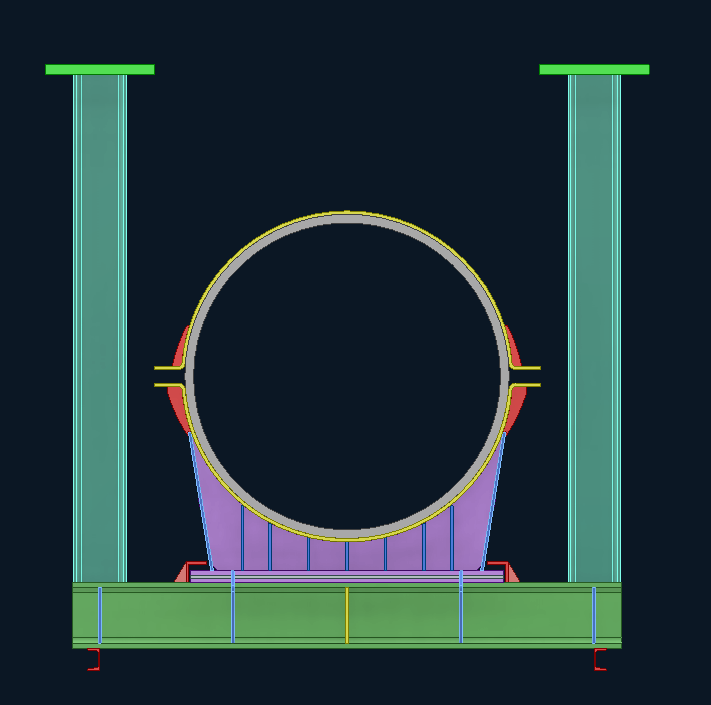
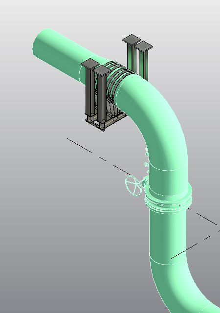
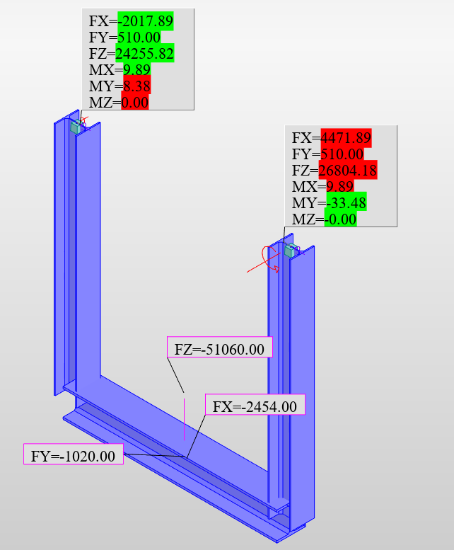
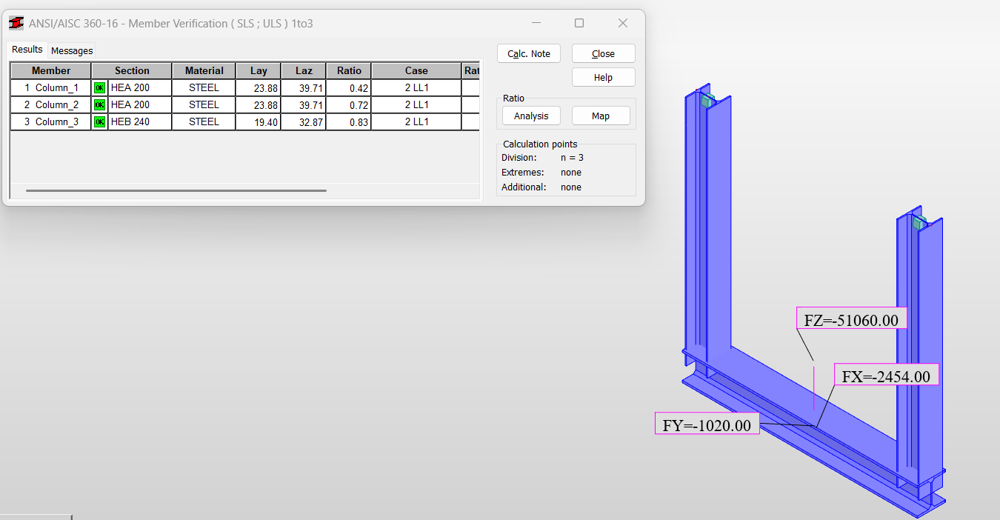
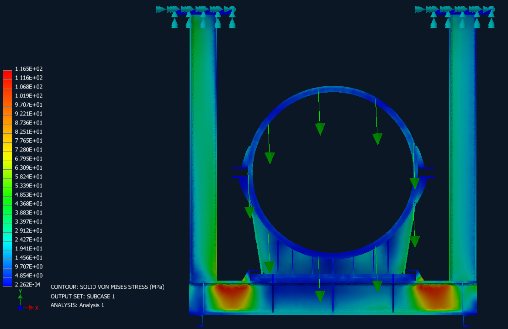
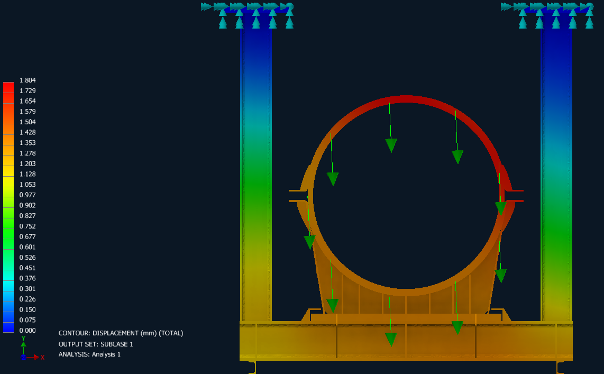
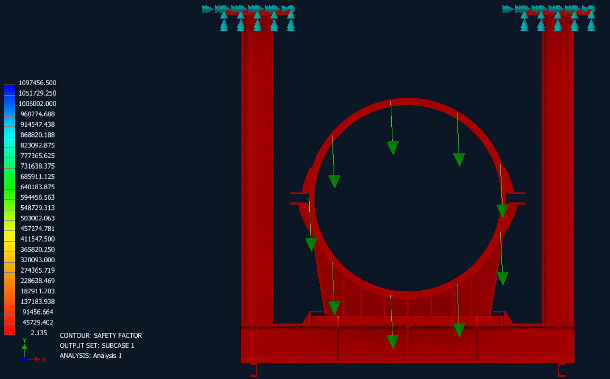

Diameter of the district cooling pipe carried by the hanger assembly.
Structural analysis · Finite element design
District Cooling Plant Hanger Pipe Support
Structural and component-level verification of a heavy-duty hanger support engineered for a district cooling plant piping system.

Project overview
This hanger pipe support was developed for a district cooling plant and selected as a representative case study from a broader package of more than 40 engineered hanger and base-mounted pipe supports. It supports a 1100 mm pipe carrying substantial multidirectional reactions, combining global structural analysis with detailed finite element assessment to produce a robust, coordinated support solution.
Design demand
1100 mm pipe and governing service loads
The support was designed around the actual pipe reactions before applying the 2× verification basis.
Actual downward load transferred from the supported pipe.
Actual load acting along the pipe axis.
Actual transverse load acting across the pipe axis.
Design basis
The actual service-load set comprised 51 tonnes vertically, 1 tonne axially, and 2.4 tonnes laterally. The support was then engineered and verified for twice these actual loads, providing a conservative basis for member selection and component assessment. The amplified forces and moments were transferred into the structural model to evaluate the load path through the horizontal member, vertical hangers, cradle, stiffeners, and supporting components.
Verified FEA results
Performance under the doubled design loads
The detailed support assembly was assessed for stress, deformation, and design margin.
Peak equivalent stress recorded in the component-level FEA result.
Maximum resultant deformation under the governing design-load case.
Lowest reported safety factor across the analyzed support assembly.
Analysis approach
- Review the governing pipe reactions and establish the amplified design-load case.
- Develop the global structural model and assess force and moment transfer through the support frame.
- Select and verify the principal steel members through structural analysis.
- Develop the detailed support geometry, pipe cradle, stiffeners, and hanger components.
- Use finite element analysis to evaluate von Mises stress, total displacement, and safety factor across the detailed components.
- Coordinate the final support arrangement with the district cooling piping model.
Engineering outcome
The combined workflow connected member-level structural checks with detailed FEA of the support components. This allowed the primary steel sections to be selected from the global analysis while local behavior in the cradle, stiffeners, base member, and hanger assembly was reviewed through stress, displacement, and safety-factor results under the doubled design loads.
Project gallery







This case study represents one design from a package of more than 40 hanger and base-mounted pipe supports developed for the plant.